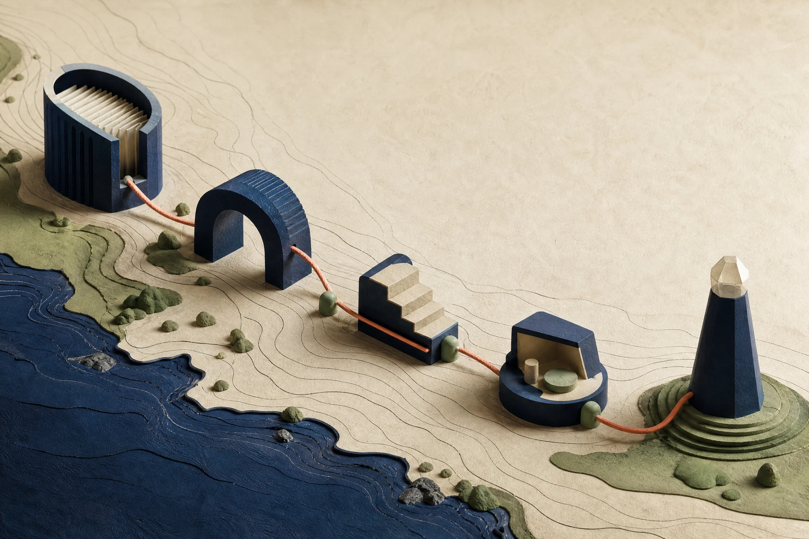

Clickable prototype · TechIreland National AI Challenge 2026
SkillsAtlas · challenge team RedeployMate
A list gives you options. SkillsAtlas gives you proof.
In one sitting, a worker confirms what they did, chooses between two credible role routes, and leaves with a SkillsAtlas Interview Board.
For a worker facing redundancy, with the adviser or recruiter already beside them. The organisation is the proposed payer; the worker does not pay. This clickable prototype uses a practice CV. SkillsAtlas proposes. The worker confirms, skips, and chooses.
Confirm the lines — nothing is used until they say yes.
Answer or Skip two questions. Skip is free. No penalty.
Pick one of two role routes. Flip the interview setting. Then save the Interview Board as PDF.

Silent · about 52 secondsThe sitting, on film
Watch 52 seconds (silent), then start. The film is optional.
01 / Station · The problem
You can see the title. Not yet the proof.
A CV, vacancy, or course list can point at a route. It does not show the confirmed evidence, specific gap, and next step that make the worker credible for it.
1 · CV claimWhat the document says
2 · Target titleWhere they might go
3 · Missing proofEvidence · gap · next step
Practice case · warehouse worker facing redundancy
Practice CV · same file
Warehouse operative
Synthetic persona. Not a real worker.
Managed stock
Helped new staff with safety
Worked nights, one site, long spell
A title or course list can point somewhere. It does not make these claims usable evidence.
What we replace it with
Evidence → two routes → Interview Board
Not a hiring prediction and not a ranking. SkillsAtlas proposes. The worker confirms, skips, and chooses. Production Board content must trace to confirmed evidence.
02 / Station · Experience becomes evidence
Nothing is used until they say yes
This prepared practice case shows the intended flow: extract, confirm, then 2–3 focused questions. Skip is one tap, with no penalty.
Extracted claims
From CV · awaiting confirmation
Not confirmed yet · tap a line or this button
Question 1 of 2 · skip is always fine
When you managed stock, roughly how many product lines — and did you use any system?
Why it matters: a number and a system turn a duty into something an employer can check.
03 / Station · Two reachable routes
Exactly two next roles — not a job board
Prepared route examples from this practice case. Not “jobs available now,” not a hiring promise, and not a ranking. Learning options are illustrative in this prototype.
Route A · reachable
Confirmed evidence
Inventory / stock controller
What already transfers
Stock control (enriched claim)
Showed new starters a safety checklist
Still missing
WMS reporting beyond day-to-day counts
Illustrative learning option
Inventory / WMS fundamentals — verify the current provider listing before use
Route B · reachable
Confirmed evidence
Team lead · warehouse operations
What already transfers
On-the-job safety briefing for new people
Worked nights at one site over a long period
Still missing
Documented people-planning / rota tools
Illustrative learning option
Supervisory skills for operatives — verify the current provider listing before use
We never say “you would be hired.” Adviser can sit with them. The applicant decides.
04 / Station · Leave with the board
They walk out holding proof
One step this week. A page for the professional beside them. Then the SkillsAtlas Interview Board. The interview setting changes the question. Last step: save the Board as a PDF.
Applicant commits
One step this week
Not the whole plan. This line is printed on the board.
Check a current inventory / WMS learning option with the adviser this week.
Professional receives
One page they can keep
Confirmed evidence, chosen route, the plan, what is still open. They may sit with the applicant. This sitting does not wait for an approve click.
S 10%Night shift, one site, stock was the job.T 10%Keep lines moving without a written WMS story.A 50%Ran counts on about 2,400 lines in SAP, monthly cycle counts — their words, confirmed.R 30%Can stand over number, system, date. Do not claim a certification that is not on the CV.
Question example · this setting
Walk me through how you knew a count was off. Hook: stock claim (confirmed).
A phone screen stays short. A hiring-manager panel asks for the story. Same evidence.